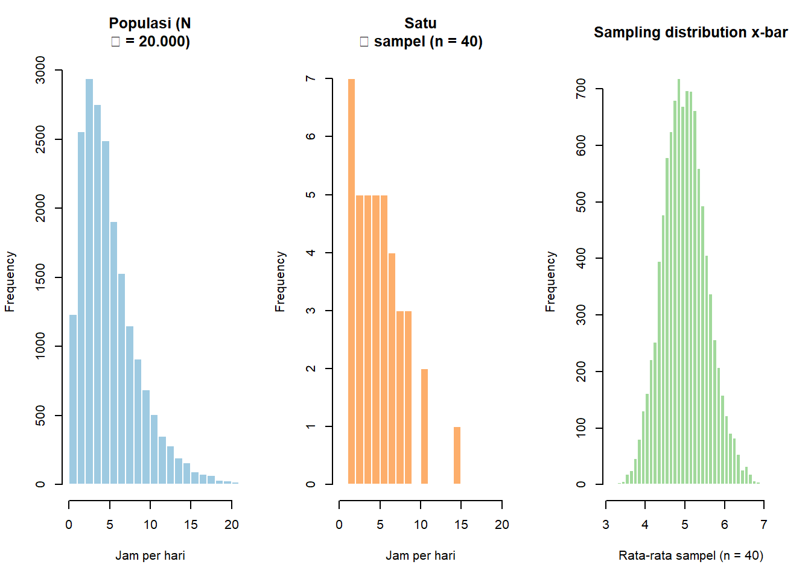
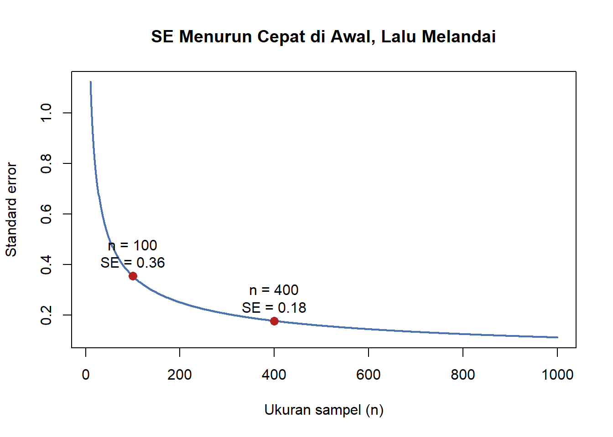
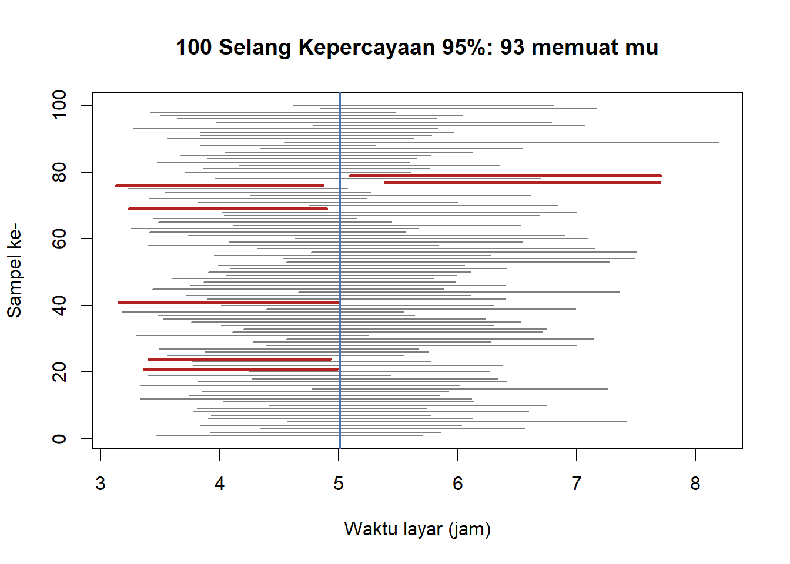
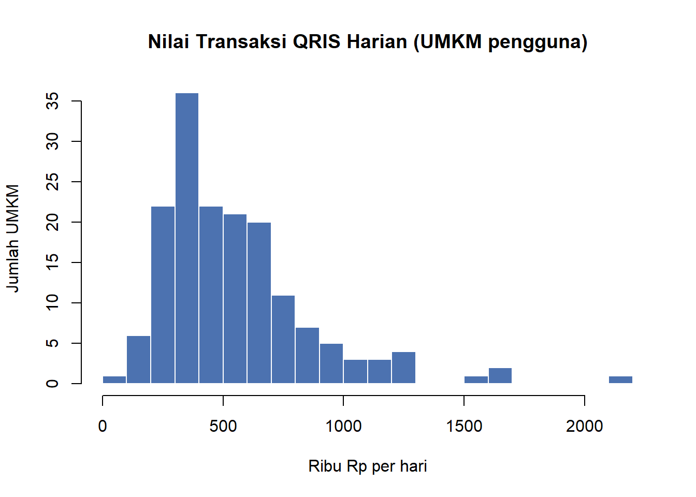

Kita memakai populasi 20.000 mahasiswa dengan variabel waktu layar harian (jam) yang menjulur kanan – bentuk yang sengaja dipilih jauh dari lonceng.
set.seed(909)N <-20000populasi <-round(rgamma(N, shape =2, rate =0.4), 2) # jam per harimu <-mean(populasi)sigma <-sqrt(mean((populasi - mu)^2)) # SD populasi (pembagi N)c(N = N, mu =round(mu, 3), sigma =round(sigma, 3))
N mu sigma
20000.000 5.010 3.551
set.seed(1)satu_sampel <-sample(populasi, 40)banyak_rata <-replicate(10000, mean(sample(populasi, 40)))par(mfrow =c(1, 3))hist(populasi, breaks =40, col ="#9ecae1", border ="white", main ="Populasi (N↪ = 20.000)",xlab ="Jam per hari", xlim =c(0, 20))hist(satu_sampel, breaks =12, col ="#fdae6b", border ="white", main ="Satu↪ sampel (n = 40)",xlab ="Jam per hari", xlim =c(0, 20))hist(banyak_rata, breaks =40, col ="#a1d99b", border ="white",main ="Sampling distribution x-bar", xlab ="Rata-rata sampel (n = 40)")

Populasi dan satu sampel sama-sama menjulur kanan, tetapi distribusi rata-rata sampel jauh lebih sempit dan hampir berbentuk lonceng. Inilah inti pertemuan ini.
2.1 Distribusi Sampling Rata-rata Sampel
Untuk sampel acak berukuran n dari populasi dengan mean μ dan simpangan baku σ:
Sifat
Rumus
Arti
Mean
\(\mu_{\bar{x}} = \mu\)
\(\bar{x}\) adalah penaksir tak bias: rata-ratanya tepat di parameter
Standard error
\(\sigma_{\bar{x}} = \dfrac{\sigma}{\sqrt{n}}\)
Sebaran \(\bar{x}\) mengecil seiring bertambahnya \(n\)
Bentuk sebaran
Normal jika populasi normal; mendekati normal untuk \(n\) cukup besar (CLT)
Memungkinkan perhitungan peluang
knitr::kable(data.frame(Besaran =c("Mean distribusi sampling", "SD distribusi sampling (SE)"),Teori =round(c(mu, sigma /sqrt(40)), 4),Simulasi_10000_sampel =round(c(mean(banyak_rata), sd(banyak_rata)), 4)), caption ="Teori vs simulasi untuk n = 40")
Teori vs simulasi untuk n = 40
Besaran
Teori
Simulasi_10000_sampel
Mean distribusi sampling
5.0097
5.0024
SD distribusi sampling (SE)
0.5615
0.5556
Besaran
Teori
Simulasi (10.000 sampel)
Mean distribusi sampling
5.0097
5.0024
SD distribusi sampling (SE)
0.5615
0.5556
Hasil simulasi hampir persis sama dengan teori.
Koreksi populasi terhingga. Rumus σ/√n mengasumsikan populasi sangat besar dibanding sampel. Jika sampel mencapai lebih dari sekitar 5% populasi (tanpa pengem- balian), SE dikalikan faktor √N−nN−1 . Pada contoh ini n/N = 0,2%, sehingga koreksi dapat diabaikan.
Kurva merah adalah distribusi normal dengan mean μ dan SD σ/√n. Semakin besar n: (1) distribusi semakin sempit, dan (2) bentuknya semakin mendekati normal meskipun populasinya enjulur kanan.
2.2 Central Limit Theorem (CLT)
Central Limit Theorem. Jika sampel acak berukuran n diambil dari populasi sem- barang bentuk dengan mean μ dan simpangan baku σ (terhingga), maka untuk n
yang cukup besar, distribusi sampling ̄x mendekati normal:
̄x ≈ N(μ, σ √ n )
CLT adalah alasan mengapa distribusi normal muncul di mana-mana dalam statistika inferensial bukan karena data selalu normal, tetapi karena rata-rata dari data cenderung normal.
Baris pertama adalah populasi; baris berikutnya adalah distribusi sampling ̄x untuk n = 2, 5, dan 30. Populasi seragam sudah tampak lonceng pada n = 5; populasi bimodal masih bergelombang pada n = 2 tetapi lonceng pada n = 30; populasi menjulur kanan membutuhkan n terbesar untuk menghilangkan kemencengannya.
Dengan n = 20 (np = 1,6), distribusi ̂p sangat menceng dan “berbatang” – pendekatan normal buruk. Dengan n = 300 (np = 24), pendekatan normal sangat baik.
2.4 Standard Error
2.4.1 Standard Error vs Simpangan Baku
Simpangan baku (\(s\) atau \(\sigma\))
Standard error (SE)
Mengukur sebaran
Data individu
Statistik (misalnya \(\bar{x}\)) dari sampel ke sampel
Karena σ biasanya tidak diketahui, SE ditaksir dengan s/√n (untuk mean) atau √ ̂p(1 − ̂p)/n(untuk proporsi).
set.seed(6)n_besar <-c(10, 40, 160, 640)knitr::kable(t(sapply(n_besar, function(nn) {hasil <-replicate(2000, { s <-sample(populasi, nn); c(sd(s), sd(s) /sqrt(nn))})c(n = nn, Rata_SD_sampel =round(mean(hasil[1, ]), 3),Rata_SE_taksiran =round(mean(hasil[2, ]), 3))})), caption =paste0("Rata-rata dari 2.000 sampel per n: SD stabil di sekitar↪ sigma = ",round(sigma, 2), ", SE mengecil"))
Rata-rata dari 2.000 sampel per n: SD stabil di sekitar ↪ sigma = 3.55, SE mengecil
n
Rata_SD_sampel
Rata_SE_taksiran
10
3.348
1.059
40
3.493
0.552
160
3.537
0.280
640
3.551
0.140
Table 8: Rata-rata dari 2.000 sampel per n: SD stabil di sekitar sigma = 3.55, SE mengecil
\(n\)
Rata-rata SD sampel
Rata-rata SE taksiran
10
3.348
1.059
40
3.493
0.552
160
3.537
0.280
640
3.551
0.140
2.4.2 Hukum Akar Kuadrat
Karena SE ∝ 1/√n, untuk membagi dua SE dibutuhkan sampel empat kali lipat. Presisi semakin mahal: menambah n dari 100 ke 400 memberi keuntungan yang sama dengan dari 400 ke 1.600.
n_seq <-10:1000plot(n_seq, sigma /sqrt(n_seq), type ="l", lwd =2, col ="#4C72B0",xlab ="Ukuran sampel (n)", ylab ="Standard error",main ="SE Menurun Cepat di Awal, Lalu Melandai")points(c(100, 400), sigma /sqrt(c(100, 400)), pch =16, col ="firebrick", cex =1.3)text(c(100, 400), sigma /sqrt(c(100, 400)), pos =3,labels =paste0("n = ", c(100, 400), "\nSE = ", round(sigma /sqrt(c(100,400)), 2)))

2.5 Estimasi
2.5.1 Point Estimate
Point estimate adalah satu angka yang menaksir parameter.
Parameter
Point estimate
Penaksir tak bias?
\(\mu\)
\(\bar{x}\)
Ya
\(p\)
\(\hat{p}\)
Ya
\(\sigma^2\)
\(s^2\) (pembagi \(n-1\))
Ya
\(\sigma\)
\(s\)
Sedikit bias (diabaikan dalam praktik)
Kelemahan point estimate: hampir pasti tidak tepat sama dengan parameter, dan tidak memberitahu seberapa jauh melesetnya.
2.5.2 Confidence Interval (Selang Kepercayaan)
Selang kepercayaan memberikan rentang nilai yang masuk akal bagi parameter:
Point estimate ± nilai kritis ⏟⏟⏟⏟⏟⏟⏟ × SE margin of error
CI untuk Mean, σ Diketahui (z)
̄x ± zα/2 σ √ n
Tingkat kepercayaan
\(\alpha\)
\(z_{\alpha/2}\)
90%
0,10
1,645
95%
0,05
1,960
99%
0,01
2,576
round(qnorm(c(0.95, 0.975, 0.995)), 3)
[1] 1.645 1.960 2.576
CI untuk Mean, σ Tidak Diketahui (t)
Dalam praktik σ hampir tidak pernah diketahui dan diganti s. Penggantian ini menambah ketidakpastian, sehingga nilai kritis diambil dari distribusi t dengan derajat bebas df = n − 1:
̄x ± tα/2, n−1 s √ n
curve(dnorm(x), -4, 4, lwd =2, ylab ="Kepadatan", xlab ="Nilai",main ="Distribusi t Berekor Lebih Tebal dari Normal")curve(dt(x, df =3), add =TRUE, lwd =2, lty =2, col ="firebrick")curve(dt(x, df =10), add =TRUE, lwd =2, lty =3, col ="darkorange")legend("topright", bty ="n", lwd =2, lty =c(1, 2, 3), col =c("black","firebrick", "darkorange"),legend =c("Normal baku (z)", "t, df = 3", "t, df = 10"))
Untuk sampel kecil, nilai kritis t lebih besar daripada 1,96 (selang lebih lebar, “hukuman” karena menaksir σ). Saat n membesar, distribusi t mendekati normal. Distribusi t dibahas lebih dalam pada Pertemuan 11.
Contoh Perhitungan
Satu sampel 40 mahasiswa (satu_sampel) dipakai untuk menaksir rata-rata waktu layar seluruh mahasiswa.
n1 <-length(satu_sampel); xbar <-mean(satu_sampel); s <-sd(satu_sampel)t_krit <-qt(0.975, df = n1 -1)se_hat <- s /sqrt(n1)moe <- t_krit * se_hatc(n = n1, x_bar =round(xbar, 3), s =round(s, 3), SE =round(se_hat, 3),t_kritis =round(t_krit, 3), MoE =round(moe, 3),Bawah =round(xbar - moe, 3), Atas =round(xbar + moe, 3))
n x_bar s SE t_kritis MoE Bawah Atas
40.000 4.915 3.019 0.477 2.023 0.966 3.950 5.881
t.test(satu_sampel, conf.level =0.95)$conf.int # fungsi bawaan R, hasil sama
“Sekitar 34,5% responden memakai QRIS setiap hari, margin of error ± 4.7 poin persentase (kepercayaan 95%)” – format inilah yang sering dikutip media dari hasil survei.
2.5.3 Menafsirkan Selang Kepercayaan dengan Benar
Kepercayaan 95% adalah sifat prosedurnya, bukan satu selang tertentu: jika pengambilan sampel dan perhitungan selang diulang berkali-kali, sekitar 95% selang yang dihasilkan akan memuat μ.
set.seed(7)B <-10015
[1] 15
selang <-t(replicate(B, {s_i <-sample(populasi, 40)m <-mean(s_i); e <-qt(0.975, 39) *sd(s_i) /sqrt(40)c(bawah = m - e, atas = m + e)}))memuat <- selang[, "bawah"] <= mu & selang[, "atas"] >= muplot(NULL, xlim =range(selang), ylim =c(1, B), xlab ="Waktu layar (jam)", ylab="Sampel ke-",main =paste0("100 Selang Kepercayaan 95%: ", sum(memuat), " memuat mu"))segments(selang[, "bawah"], 1:B, selang[, "atas"], 1:B,col =ifelse(memuat, "grey50", "firebrick"), lwd =ifelse(memuat, 1,2.5))abline(v = mu, col ="#4C72B0", lwd =2)

Garis merah adalah selang yang gagal memuat μ. Kita tidak pernah tahu apakah selang kita termasuk yang merah tetapi kita tahu prosedurnya berhasil sekitar 95% dari waktu.
Tafsiran
Benar/Salah
“Kami 95% yakin bahwa selang 4,2–5,7 jam memuat rata-rata populasi.”
Benar (bahasa sehari-hari yang diterima)
“95% selang yang dibuat dengan prosedur ini akan memuat \(\mu\).”
Benar (tafsiran paling tepat)
“Ada peluang 95% bahwa \(\mu\) berada di antara 4,2 dan 5,7.”
Salah. \(\mu\) bukan variabel acak; ia di dalam atau di luar selang
“95% mahasiswa memiliki waktu layar antara 4,2 dan 5,7 jam.”
Salah. CI adalah tentang rata-rata, bukan individu
“95% rata-rata sampel lain akan jatuh di selang ini.”
Salah
2.5.4 Faktor yang Memengaruhi Lebar Selang
Faktor
Jika dinaikkan
Lebar selang
Tingkat kepercayaan (90% → 99%)
Nilai kritis naik
Melebar
Ukuran sampel \(n\)
SE turun
Menyempit
Variabilitas data (\(s\))
SE naik
Melebar
lebar <-function(n, s, conf) 2*qt(1- (1- conf) /2, n -1) * s /sqrt(n)tabel_lebar <-round(outer(c(20, 80, 320), c(0.90, 0.95, 0.99),Vectorize(function(n, cf) lebar(n, s =3, conf = cf))),3)dimnames(tabel_lebar) <-list(c("n = 20", "n = 80", "n = 320"), c("90%", "95%","99%"))knitr::kable(tabel_lebar, caption ="Lebar CI (s = 3) menurut ukuran sampel dan tingkat kepercayaan")
Lebar CI (s = 3) menurut ukuran sampel dan tingkat kepercayaan
90%
95%
99%
n = 20
2.320
2.808
3.838
n = 80
1.116
1.335
1.771
n = 320
0.553
0.660
0.869
2.6 Menentukan Ukuran Sampel
Sebelum survei, peneliti biasanya menetapkan margin of error (E) yang diinginkan lalu menghitung n minimum (selalu dibulatkan ke atas).
Ukuran sampel survei proporsi (p = 0,5; kepercayaan 95%)
MoE
n_minimum
5%
385
3%
1068
2%
2401
1%
9604
Survei nasional dengan margin of error sekitar ± 3% memerlukan sekitar 1.000–1.100 responden,berapa pun ukuran populasinya (asalkan populasi jauh lebih besar dari sampel). Memperkecil margin of error dari 2% ke 1% memerlukan sampel empat kali lipat.
Ukuran sampel tidak menyembuhkan bias. Rumus di atas hanya mengendalikan galat acak. Jika metode sampling bias (Pertemuan 3), sampel sebesar apa pun tetap menghasilkan selang yang presisi di tempat yang salah.
2.7 Studi Kasus Komprehensif: Survei Adopsi QRIS UMKM
Konteks: Dinas Koperasi ingin menaksir (1) proporsi UMKM kuliner yang menerima QRIS dan (2) rata-rata nilai transaksi QRIS harian per UMKM pengguna. Survei acak sederhana terhadap 250 UMKM dari daftar resmi menghasilkan data berikut.
round(c(p_hat = p_hat_u, SE = se_u, Bawah = ci_u[1], Atas = ci_u[2]), 4)
p_hat SE Bawah Atas
0.6600 0.0300 0.6013 0.7187
2.7.2 Langkah 2: Estimasi Rata-rata Nilai Transaksi
hist(nilai_trx /1000, breaks =25, col ="#4C72B0", border ="white",main ="Nilai Transaksi QRIS Harian (UMKM pengguna)", xlab ="Ribu Rp per hari",ylab ="Jumlah UMKM")

ci_trx <-t.test(nilai_trx)$conf.intround(c(n =length(nilai_trx), Mean =mean(nilai_trx), Median =median(nilai_trx),SE =sd(nilai_trx) /sqrt(length(nilai_trx)), Bawah = ci_trx[1], Atas =ci_trx[2]))
n Mean Median SE Bawah Atas
165 553685 472000 24623 505065 602304
2.7.3 Langkah 3: Apakah CLT Dapat Diandalkan di Sini?
Datanya menjulur kanan. Kita periksa dengan bootstrap: mengambil ulang sampel (dengan pengembalian) dari data kita sendiri untuk meniru distribusi sampling .̄x
set.seed(11)boot_mean <-replicate(5000, mean(sample(nilai_trx, replace =TRUE)))hist(boot_mean /1000, breaks =40, col ="#a1d99b", border ="white", freq =FALSE,main ="Distribusi Bootstrap Rata-rata Nilai Transaksi", xlab ="Ribu Rp per↪ hari")curve(dnorm(x, mean(nilai_trx) /1000, sd(nilai_trx) /sqrt(length(nilai_trx)) /1000),add =TRUE, col ="firebrick", lwd =2)
Distribusi bootstrap ̄x hampir berbentuk lonceng dan selang bootstrap hampir sama dengan selang t. Dengan n = 165 pengguna, CLT bekerja baik meskipun data individunya menceng.
2.7.4 Langkah 4: Merencanakan Survei Lanjutan
Dinas ingin survei tahun depan menghasilkan margin of error proporsi ± 3% dan rata-rata transaksi ± Rp 30.000 (kepercayaan 95%).
c(n_untuk_proporsi =n_prop(E =0.03, p = p_hat_u),n_pengguna_untuk_mean =n_mean(sigma =sd(nilai_trx), E =30000))
n_untuk_proporsi n_pengguna_untuk_mean
958 427
2.7.5 Pertanyaan Diskusi dan Jawaban
Bagaimana melaporkan hasil proporsi? “Diperkirakan 66% UMKM kuliner telah menerima QRIS (CI 95%: 60.1%–71.9%; n = 250).” Kali- mat ini memuat point estimate, selang, tingkat kepercayaan, dan ukuran sampel.
Mengapa median transaksi jauh di bawah mean, dan mana yang dilaporkan? Distribusinya menjulur kanan (segelintir UMKM besar). Untuk menggambarkan UMKM tipikal,median lebih tepat. Namun jika dinas ingin menaksir total nilai transaksi (mean × jumlah UMKM pengguna), yang dibutuhkan justru mean beserta selangnya.
Apakah selang 95% berarti 95% UMKM bertransaksi di rentang tersebut? Tidak. Selang itu menaksir rata-rata populasi. Rentang nilai transaksi individu jauh lebih lebar lihat histogram.
Mengapa ukuran sampel untuk proporsi tidak dihitung dengan p = 0,5? Kita sudah memiliki taksiran ̂p ≈ 0.66 dari survei ini. Memakai p = 0,5 lebih aman (menghasilkan n terbesar), tetapi dengan informasi sebelumnya kita dapat menghemat biaya. Perbedaannya kecil karena p(1 − p) hampir datar di sekitar 0,5.
2.8 Latihan Mandiri
2.8.1 Latihan Utama: Berat Kemasan Kopi Bubuk
Konteks: Mesin pengisi kopi bubuk dirancang mengisi kemasan dengan rata-rata 250 gram. Dari data historis, simpangan baku pengisian σ = 6 gram. Petugas QC mengambil sampel acak 36 kemasan.
set.seed(99)berat <-round(rnorm(36, mean =248.5, sd =6), 1)summary(berat)
Min. 1st Qu. Median Mean 3rd Qu. Max.
230.3 244.9 249.1 247.4 251.4 256.9
Jawaban: SE = 6/6 = 1 gram. Rata-rata dari 36 kemasan biasanya meleset sekitar 1 gram dari rata-rata sebenarnya – jauh lebih kecil daripada variasi berat antarkemasan (6 gram).
Tugas 2:
Jika mesin bekerja benar (μ = 250), berapa peluang rata-rata 36 kemasan kurang dari 248 gram?
pnorm(248, mean =250, sd = sigma_k /sqrt(n_k))
[1] 0.02275013
Jawaban: z = (248 − 250)/1 = −2, sehingga peluangnya sekitar 0.0228. Kejadian ini jarang jika mesin bekerja benar – gagasan yang menjadi dasar uji hipotesis di Pertemuan 10.
Tugas 3:
Hitung CI 95% untuk rata-rata berat (σ diketahui)
ci_z <-mean(berat) +c(-1, 1) *qnorm(0.975) * sigma_k /sqrt(n_k)round(c(x_bar =mean(berat), Bawah = ci_z[1], Atas = ci_z[2]), 2)
x_bar Bawah Atas
247.40 245.44 249.36
Tugas 4: Hitung CI 95% jika σ dianggap tidak diketahui (t)
Jawaban: Selang z dan selang t sangat mirip karena n = 36 cukup besar (t kritis hanya sedikit di atas 1,96) dan s dekat dengan σ. Jika nilai 250 tidak berada di dalam selang, data memberi indikasi bahwa rata-rata pengisian mesin berbeda dari target – yang dapat dikonfirmasi dengan uji hipotesis. Hasil sampel ini: 250 berada di luar selang z.
Tugas 6 (Tantangan): Ukuran sampel
Berapa kemasan yang harus diambil agar margin of error CI 95% hanya ± 1 gram? Dan ± 0,5 gram?
c(MoE_1 =n_mean(sigma =6, E =1), MoE_0.5 =n_mean(sigma =6, E =0.5))
MoE_1 MoE_0.5
139 554
Jawaban: 139 kemasan untuk ± 1 gram dan 554 kemasan untuk ± 0,5 gram – membagi dua margin of error membutuhkan sampel empat kali lipat.
2.8.2 Latihan Tambahan (Self-Check)
Kerjakan soal-soal berikut secara mandiri sebelum melihat kunci jawaban pada komentar kode.Soal A. Waktu tunggu layanan pelanggan berdistribusi menjulur kanan dengan μ = 8 menit dan σ = 6 menit. Untuk sampel acak 64 panggilan, tentukan mean, SE, dan bentuk distribusi sampling,lalu hitung ̄x P( ̄x > 9).
# Kunci jawaban:# Mean = 8; SE = 6 / sqrt(64) = 0.75; bentuk mendekati normal (CLT, n = 64)1-pnorm(9, mean =8, sd =0.75) # z = 1.33 -> sekitar 0.0912
[1] 0.09121122
Soal B. Survei 1.200 pemilih menunjukkan 54% mendukung sebuah kebijakan. Hitung CI 95% dan margin of error-nya.
Soal C. Sepuluh pengukuran pH air limbah: 6,8; 7,1; 6,9; 7,4; 7,0; 6,7; 7,2; 7,3; 6,9; 7,1. Hitung CI 95% untuk rata-rata pH secara manual dengan distribusi t lalu periksa dengan t.test().
Soal D. Sebuah media menulis: “Dengan CI 95% [62%, 68%], berarti 95% warga memiliki tingkat kepuasan antara 62% dan 68%.” Perbaiki tafsiran ini.
# Kunci jawaban:# Tafsiran keliru. Yang benar: "Kami 95% yakin bahwa proporsi warga yang puas di seluruh# populasi berada antara 62% dan 68%." CI menaksir PARAMETER populasi (proporsiyang puas),# bukan rentang nilai individu.
Kesalahan Umum dalam Sampling Distribution dan Estimasi 1. Menyamakan distribusi sampel dengan distribusi sampling - yang pertama berisi data individu, yang kedua berisi statistik dari banyak sampel.
Mengira CLT membuat data menjadi normal – CLT berbicara tentang distribusi rata-rata, bukan data individu.
Menganggap n ≥ 30 selalu cukup – data yang sangat menceng atau beroutlier bisa membutuhkan lebih.
Menyamakan SD dan SE – SD mengukur keragaman individu; SE mengukur ketepatan taksiran.
Memakai z padahal σ tidak diketahui dan n kecil – gunakan distribusi t.
Menafsirkan CI sebagai peluang parameter berada di dalam selang tertentu, atau sebagai rentang nilai individu.
Membulatkan ukuran sampel ke bawah – selalu bulatkan ke atas.
Mengira ukuran populasi menentukan ukuran sampel – untuk populasi besar, yang menentukan adalah margin of error, tingkat kepercayaan, dan variabilitas.
Mengira sampel besar menghilangkan bias – ukuran sampel hanya mengecilkan galat acak.
Memakai pendekatan normal untuk proporsi saat n ̂p atau n(1 − ̂p) kurang dari 10.
Melaporkan point estimate tanpa selang atau n – pembaca tidak dapat menilai ketepatannya.
Nilai kritis, peluang, dan kepadatan distribusi \(t\)
t.test(x, conf.level = 0.95)$conf.int
Selang kepercayaan \(t\) untuk mean
curve(f(x), add = TRUE)
Menambahkan kurva teoretis pada histogram
segments(x0, y0, x1, y1)
Menggambar selang kepercayaan sebagai garis
ceiling(x)
Membulatkan ke atas (ukuran sampel)
outer(a, b, f)
Tabel nilai untuk kombinasi dua parameter
quantile(boot, c(0.025, 0.975))
Selang bootstrap persentil
2.10 Glosarium Istilah
Istilah
Definisi Singkat
Statistika Inferensial
Menarik kesimpulan tentang populasi dari sampel
Distribusi Sampling
Distribusi sebuah statistik dari semua kemungkinan sampel berukuran \(n\)
Penaksir Tak Bias
Statistik yang rata-rata distribusi samplingnya sama dengan parameter
Central Limit Theorem
Distribusi \(\bar{x}\) mendekati normal untuk \(n\) besar, apa pun bentuk populasinya
Standard Error (SE)
Simpangan baku distribusi sampling sebuah statistik
Koreksi Populasi Terhingga
Faktor \(\sqrt{\dfrac{N-n}{N-1}}\) bila sampel lebih dari sekitar 5% populasi
Point Estimate
Satu nilai yang menaksir parameter
Confidence Interval
Rentang nilai yang masuk akal bagi parameter dengan tingkat kepercayaan tertentu
Tingkat Kepercayaan
Persentase selang (dari pengulangan prosedur) yang memuat parameter
Margin of Error
Nilai kritis \(\times\) SE; setengah lebar selang
Nilai Kritis
Nilai dari distribusi \(z\) atau \(t\) yang menentukan lebar selang
Distribusi \(t\)
Distribusi berekor tebal yang dipakai bila \(\sigma\) ditaksir dengan \(s\)
Derajat Bebas (df)
Parameter distribusi \(t\); \(n-1\) untuk satu mean
Bootstrap
Pengambilan sampel ulang dengan pengembalian dari data untuk meniru distribusi sampling
2.11 Rangkuman dan Kesimpulan
Distribusi sampling menggambarkan bagaimana sebuah statistik bervariasi dari sampel ke sampel; ia adalah fondasi seluruh statistika inferensial.
̄x dan ̂p adalah penaksir tak bias dengan SE masing-masing σ/√n dan √p(1 − p)/n.
CLT menjamin distribusi ̄x mendekati normal untuk n cukup besar, apa pun bentuk populasinya; makin menceng populasi, makin besar n yang dibutuhkan.
SE bukan SD: SE mengecil sebanding 1/√n – presisi dua kali lipat membutuhkan sampel empat kali lipat.
Selang kepercayaan = point estimate ± nilai kritis × SE. Gunakan z bila σ diketahui, t bila σ ditaksir. Kepercayaan 95% adalah sifat prosedur, bukan peluang untuk satu selang.
Ukuran sampel dapat direncanakan dari margin of error yang diinginkan – tetapi tidak dapat menyembuhkan bias sampling.
Jembatan ke sesi berikutnya: Tugas 2 latihan tadi bertanya, “jika mesin bekerja benar, seberapa jarang hasil seperti ini?” Pertanyaan itulah inti uji hipotesis di Pertemuan 10: H0, H1, tingkatsignifikansi, p-value, dan kesalahan Tipe I dan II.
2.12 Referensi Pendukung
Materi ini merangkum topik distribusi sampling dan estimasi (sampling distributions and confidenceintervals) yang umum dibahas pada buku teks pengantar statistika bisnis/data science. Mahasiswa disarankan melengkapi pemahaman dengan merujuk pada:
• Modul/slide perkuliahan “Introduction to Statistics (SDT-1102)” – Pertemuan 9: SamplingDistribution dan Estimasi.
• Buku teks pengantar statistika pada bab Sampling Distributions dan Confidence IntervalEstimation.
• Efron, B., & Tibshirani, R. J. (1993). An Introduction to the Bootstrap. Chapman & Hall.
• Dokumentasi resmi R: ?pnorm, ?qnorm, ?qt, ?t.test, ?replicate (dapat diakses langsung di R/RStudio).